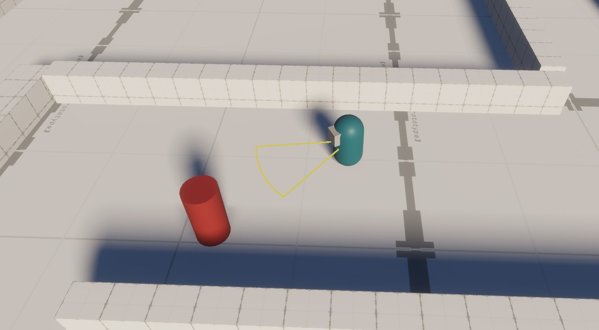

Solo Passion Project
BODYRUNNERS is a solo-developed dungeon crawler created as a school project focused on reusable components. The goal of the project was to design and implement a flexible and reusable system architecture that could be applied across multiple gameplay features. Players fight their way through challenging levels filled with enemies while collecting upgrades and becoming stronger over time. The project combines fast-paced combat, progression systems, and modular game mechanics, all built around the concept of reusability and maintainable code. Every aspect of the game was created by me, including the programming, game design, art, UI, and overall system architecture. It is a work in progress game and is not yet finished.

BODYRUNNERS was developed entirely by me as part of a school project about reusable components. Throughout development, I was responsible for every aspect of the project, including: